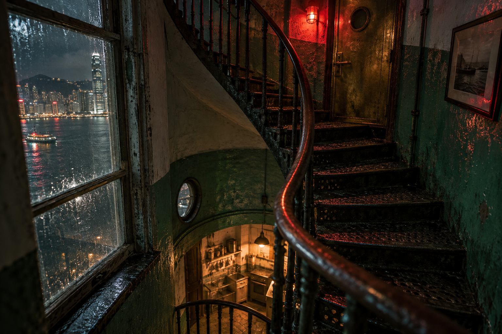
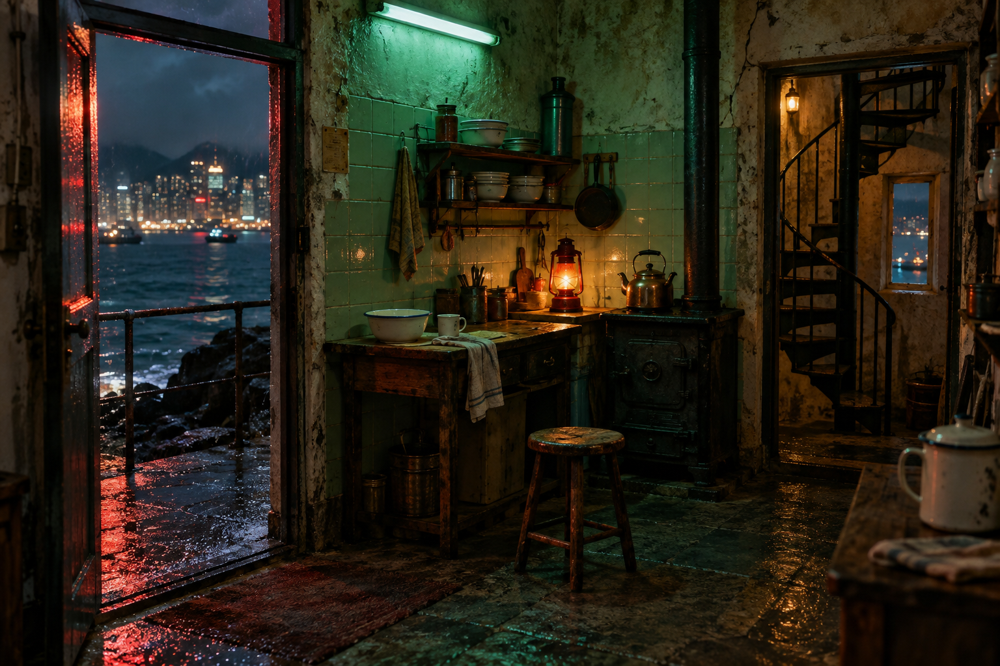
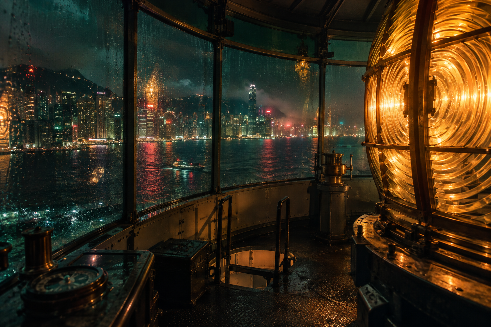
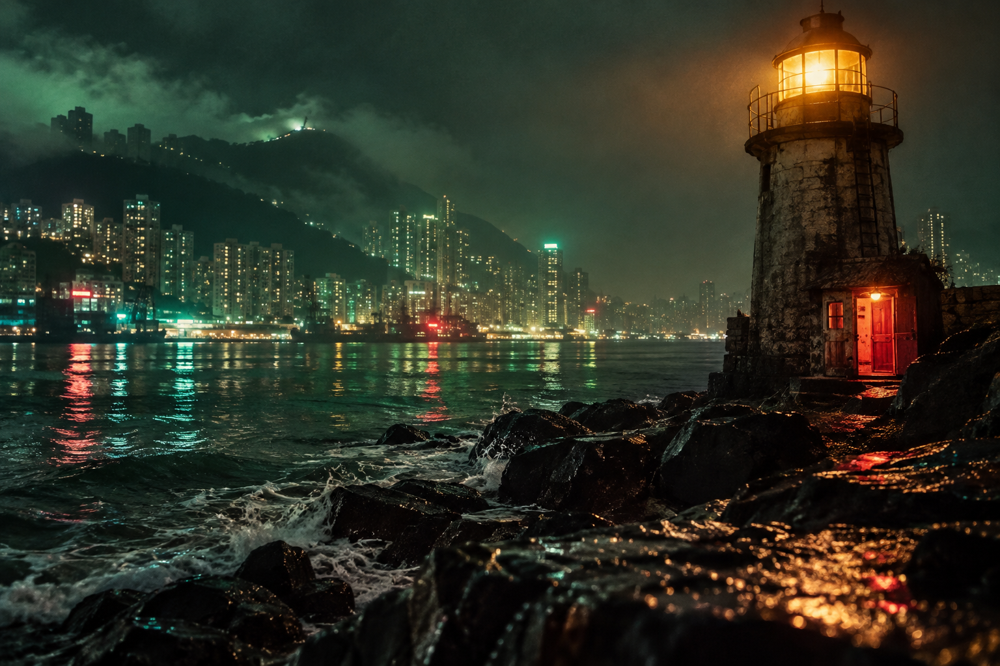

Your place in the night

Rocks
HONG KONGBlack rocks glisten beneath the lighthouse, with the lights of Hong Kong reflected in the sea beyond. To the north a ladder leads to the lamp, while a kitchen door glows to the west.